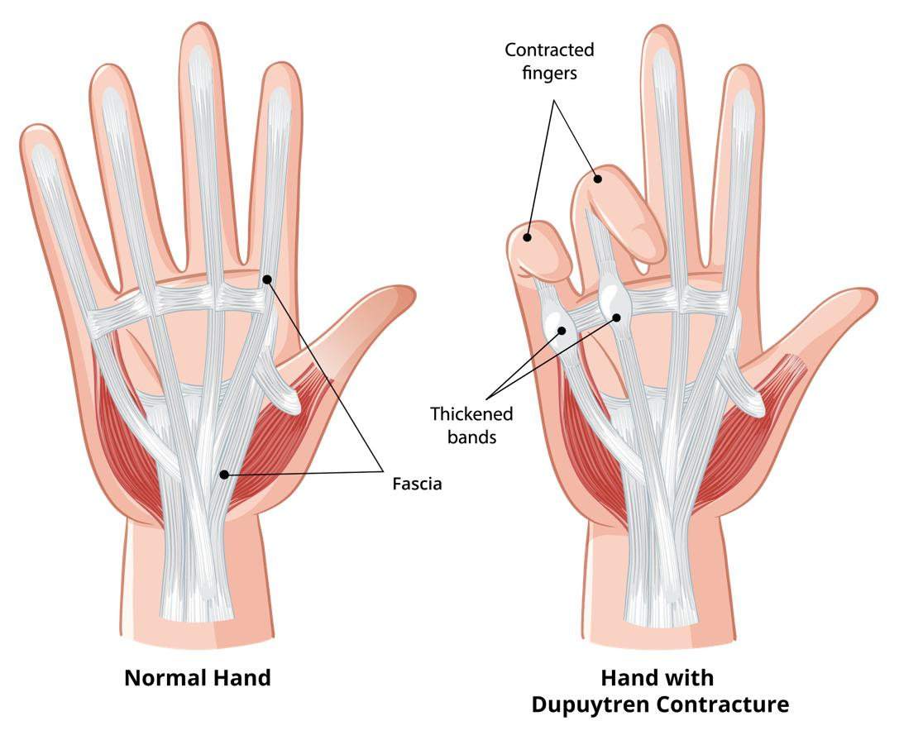

Dupuytren contracture is a condition that affects the hand, mainly the ring finger and little finger. It makes the tissue under the skin of your palm thick and tight. Over time, this can cause your fingers to bend toward your palm. It may become hard to straighten them.
This condition is not caused by an injury, and it is not an infection. It often starts slowly in one hand. Over time, it may get worse and can affect both hands.

Experts do not know the exact cause. It is linked to changes in connective tissue in the hand. Connective tissue holds together and supports organs and body parts.
The connective tissue in your hand is called fascia. It is made up of bands that run under the skin of the palm and fingers. When you have Dupuytren contracture, these bands get tight and thick. Bumps called nodules may form under your skin.
You may be more likely to have Dupuytren contracture if:
You are over age 50.
You are male.
You have family members with the condition.
You are White or of Northern European background.
You have diabetes, epilepsy, or liver disease.
You use tobacco or alcohol.
You take certain medicines for seizures.
You may notice:
A thick bump or nodule in the palm
Tight bands or cords under the skin
One or more fingers that slowly start to bend, and you find it hard or impossible to straighten them
Trouble laying your hand flat on a table
Often, no pain at first, or just some soreness or tightness
Your care team will:
Look at your hand
Feel the tight bands or lumps
Ask you to lay your hand flat on a table
Do X-ray or other imaging tests to make sure there are no other conditions causing the problem
There is no cure, but treatments can help slow the condition down or make it easier to use your hand. Treatment depends on how much your fingers are bending and how much the condition affects your daily life.
Your care team may send you to a hand therapist to learn stretches and exercises.
Some people wear a splint to support the fingers, especially at night.
Exercises may help slow stiffness.
If your hand becomes hard to use, you may need a procedure, such as:
Cortisone injection: Your care team gives you a shot of medicine in the area to ease pain and soften any nodules.
Needle release: A needle is used to break the tight cord.
Enzyme injection: A medicine is injected to break up the cord so you can straighten your fingers.
Surgery: In more serious cases, the cord is removed.
Your care team will help you decide if these are needed.
Protect your hands: Use gloves when working with tools or heavy items.
Use large-grip tools: These are easier to hold if your hand is stiff.
Break up tasks: Take breaks when using your hands for long periods.
Stay active: Gentle hand movements help keep your joints working.
Avoid smoking: Smoking can make the condition worse by affecting blood flow.
Limit alcohol: Too much alcohol may raise your risk.
Keep track of any changes in your hand.
Go to any scheduled appointments.
Let your care team know if symptoms get worse.
Treatment may need to be repeated later if the condition comes back.
If you have Dupuytren contracture, you may be more likely to have conditions that affect connective tissue in other parts of your body. Play close attention to your health and tell your care team about any changes.
Having Dupuytren contracture can be frustrating, especially if it makes it hard to do things like writing, cooking, or using your phone. You are not alone. Many people manage this condition well with support and treatment. Your care team is always here for you.
Call your care team if:
You have a new lump or bump in the palm of your hand, especially near the base of your fingers.
Your fingers start to bend toward your palm, and you cannot straighten them fully, or you cannot lay your hand flat on a table.
You have trouble doing daily activities like washing your face, putting on gloves, or putting your hand in your pocket because your fingers will not open all the way.
The skin on your palm looks puckered or thickened, or you notice cords or bands under the skin.
Your hand feels tender or itchy, or you notice burning or pressure in your palm or fingers.
You have questions or concerns about changes in your hand or finger movement, or any other symptoms.
Get help right away if:
You have sudden, severe pain in your hand or fingers that you have never felt before.
Your hand or fingers turn cold, blue, or numb and do not warm up.
You have a deep cut, severe injury, or bleeding that will not stop.
You lose feeling or cannot move your hand or fingers at all.
You notice signs of infection in your hand, including redness, warmth, swelling, or pus, along with a fever of 100.4°F or 38°C.
You have any injury to your hand that causes a new deformity, or your fingers look out of place.
Thank you for trusting us with your care. We are here to support you and want you to feel your best. Contact us with any questions.
IF YOU HAVE A MEDICAL EMERGENCY, CALL 911 OR GO TO THE EMERGENCY ROOM.
The information presented is intended for general information and educational purposes. It is not intended to replace the advice of your health care provider. Contact your health care provider if you believe you have a health problem.
Last updated May 2025
© 2025 Mytonomy, Inc. All rights reserved.